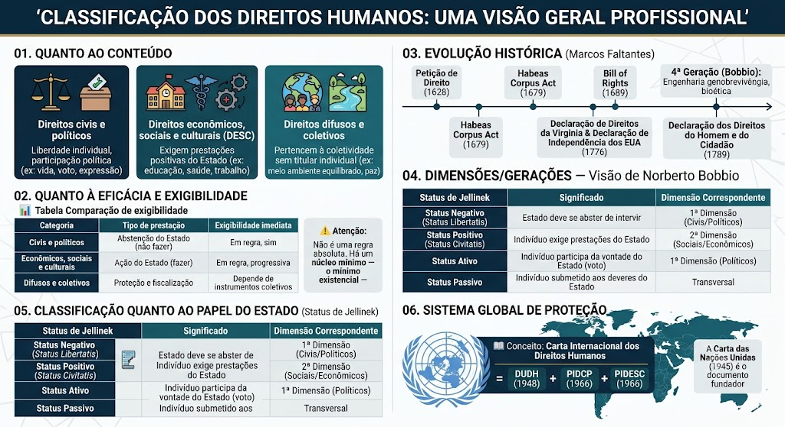

Material de estudo: Classificação
Material complementar · Ver fonte no GitHub
Quanto ao conteúdo
Direitos civis e políticos
Ligados à liberdade individual e à participação política: vida, liberdade, igualdade formal, voto, liberdade de expressão.
Direitos econômicos, sociais e culturais (DESC)
Exigem, em regra, prestações positivas do Estado: educação, saúde, moradia, trabalho, previdência.
Direitos difusos e coletivos
Pertencem a grupos ou à coletividade como um todo, sem titular individualizado: meio ambiente equilibrado, paz, patrimônio comum da humanidade.
Quanto à eficácia e exigibilidade
Comparação de exigibilidade
| Categoria | Tipo de prestação | Exigibilidade imediata |
|---|---|---|
| Civis e políticos | Abstenção do Estado (não fazer) | Em regra, sim |
| Econômicos, sociais e culturais | Ação do Estado (fazer) | Em regra, progressiva |
| Difusos e coletivos | Proteção e fiscalização | Depende de instrumentos coletivos (ex.: ação civil pública) |
Não é uma regra absoluta
A doutrina contemporânea rejeita a ideia de que direitos sociais nunca seriam exigíveis de imediato. Há um núcleo mínimo — o mínimo existencial — que pode ser exigido judicialmente mesmo sem lei regulamentadora.
Evolução histórica (Marcos Faltantes)
Petição de Direito (1628) e Habeas Corpus Act (1679)
Consolidação dos direitos civis na Inglaterra, antecedendo a Revolução Gloriosa.
Bill of Rights (1689)
Marco da transição do absolutismo para a monarquia constitucional na Inglaterra.
Declaração de Direitos da Virgínia (1776) e Declaração de Independência dos EUA (1776)
Primeiro documento constitucional a declarar formalmente os direitos inalienáveis dos indivíduos, antes da Revolução Francesa.
Declaração dos Direitos do Homem e do Cidadão (1789)
Marco supremo do liberalismo e da 1ª Dimensão/Geração na França.
Dimensões/Gerações — Visão de Norberto Bobbio
4ª Geração (Bobbio)
Ligada à engenharia genética, biotecnologia e bioética — manipulação do DNA, clonagem, pesquisas com células-tronco.
5ª Geração (Bobbio)
Direito à paz, entendido como sobrevivência da humanidade diante dos avanços tecnológicos e riscos globais.
6ª Geração (Uadi Lammêgo Bulos)
Alguns doutrinadores atribuem a 6ª dimensão ao direito à água potável, tema em alta na jurisprudência recente.
Classificação quanto ao papel do Estado (Status de Jellinek)
Teoria dos Status de Georg Jellinek
| Status de Jellinek | Significado | Dimensão Correspondente |
|---|---|---|
| Status Negativo (Status Libertatis) | O Estado deve abster-se de intervir na liberdade do indivíduo. Corresponde aos direitos de 1ª geração (civis e políticos), que exigem apenas que o Estado não interfira — exemplo: liberdade de expressão, onde o Estado não pode censurar. | 1ª Dimensão (Civis/Políticos) |
| Status Positivo (Status Civitatis) | O indivíduo pode exigir prestações e serviços públicos do Estado. Corresponde aos direitos de 2ª geração (sociais, econômicos e culturais), que exigem ação positiva do Estado — exemplo: direito à saúde, onde o Estado deve construir hospitais e oferecer atendimento. | 2ª Dimensão (Sociais/Econômicos) |
| Status Ativo (Status Politicus) | O indivíduo participa da formação da vontade do Estado (voto, eleições, mandato). Corresponde aos direitos políticos, que garantem a participação ativa na vida pública — exemplo: direito ao voto, direito de candidatar-se a cargos eletivos. | 1ª Dimensão (Políticos) |
| Status Passivo (Status Subiecti) | O indivíduo está submetido ao poder do Estado e aos deveres impostos pela ordem jurídica. Corresponde aos deveres fundamentais do cidadão — exemplo: pagamento de impostos, reserva de ordem, serviço militar (quando houver). |
Mnemônico
📌 Negativo = abstenção (1ª) | Positivo = prestação (2ª) | Ativo = participação (voto, 1ª política) | Passivo = deveres (transversal)
Sistema Global de Proteção
Carta Internacional dos Direitos Humanos
A junção da DUDH (1948) + PIDCP (1966) + PIDESC (1966) forma o bloco conhecido como Carta Internacional dos Direitos Humanos. A Carta das Nações Unidas (1945) é o documento fundador que inaugura o Sistema Global de Proteção dos Direitos Humanos.
Estrutura em dois pilares da ONU
O Sistema Global de Proteção dos Direitos Humanos da ONU é dividido em dois grandes pilares:
1. Órgãos Principais (baseados na Carta da ONU):
- Conselho de Direitos Humanos da ONU — órgão político-consultivo da ONU, substituiu a Comissão de Direitos Humanos em 2006. Ele conduz a Revisão Periódica Universal (RPU), que avalia o cumprimento dos compromissos de direitos humanos por todos os Estados-membros da ONU a cada 4-5 anos.
- Alto Comissariado das Nações Unidas para os Direitos Humanos (ACNUDH) — órgão técnico-científico que coordena as atividades do Sistema das Nações Unidas no campo dos direitos humanos.
2. Órgãos de Tratados (Comitês):
São órgãos de monitoramento criados pelos próprios tratados internacionais. Cada tratado tem seu comitê específico, composto por expertises independentes eleitos pelos Estados-partes. Esses comitês recebem relatórios periódicos dos Estados e emitem pareceres/recomendações, mas não proferem sentenças judiciais vinculantes definitivas (diferente do sistema interamericano).
📌 Comitês principais:
- Comitê de Direitos Humanos (Pacto Internacional de Direitos Civis e Políticos — PIDCP)
- Comitê contra a Tortura (Convenção contra a Tortura)
- Comitê CEDAW (Convenção sobre a Eliminação de Todas as Formas de Discriminação contra a Mulher)
- Comitê sobre os Direitos da Criança (Convenção sobre os Direitos da Criança)
- Comitê de Prevenção da Tortura (CAT — órgão distinto do Comitê contra a Tortura)
- Comitê de Direitos Econômicos, Sociais e Culturais (PIDESC)
Controle de Convencionalidade
Conceito e aplicação
O Controle de Convencionalidade é a análise de compatibilidade entre as normas internas (leis, decretos, atos normativos) e os tratados internacionais de direitos humanos ratificados pelo Estado. No Brasil, esse controle pode ser realizado de duas formas:
Controle Difuso de Convencionalidade: realizado por qualquer juiz em um processo concreto (ex.: habeas corpus, ação popular). O juiz verifica, caso a caso, se a norma interna é compatível com o tratado. Se for incompatível, deve aplicar diretamente a norma internacional, com base no status supralegal dos tratados (quando aprovados pelo rito comum) ou no status constitucional (quando aprovados pelo rito do Art. 5º, § 3º).
Controle Concentrado de Convencionalidade: realizado pelo Supremo Tribunal Federal (STF), via Ação Direta de Inconstitucionalidade (ADI) ou Arguição de Descumprimento de Preceito Fundamental (ADPF). O STF analisa a constitucionalidade de leis à luz dos tratados de direitos humanos que integram o Bloco de Constitucionalidade (aqueles aprovados com status de emenda constitucional).
Mapa-mental
Mapa-mental
